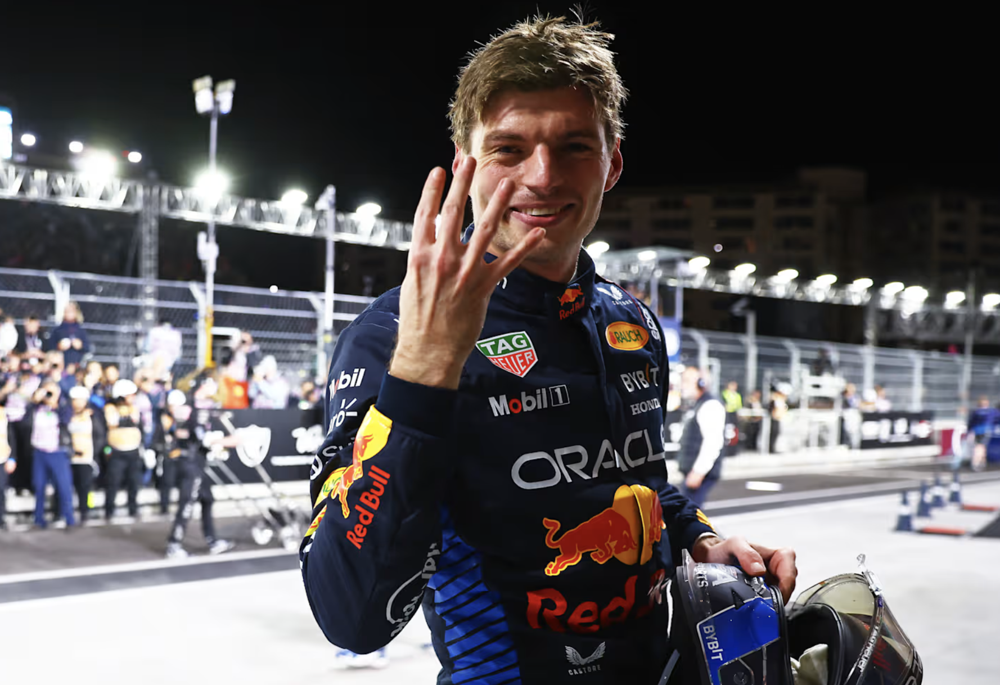

Max Emilian Verstappen is a Dutch and Belgian racing driver who competes under the Dutch flag in Formula One for Red Bull Racing. Verstappen has won four Formula One World Drivers' Championship titles, which he won consecutively from 2021 to 2024 with Red Bull, and has won 71 Grands Prix across 11 seasons.